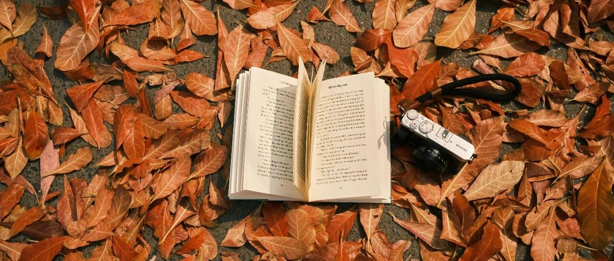

更辽阔的星辰大海～
倒上一杯老枞水仙，我开始码字。
经常有读者问“金渐成”名称，是不是因为我有养金渐层？
其实这个名称有两层意思:
其一是猫，我养了四只蓝金渐层（一只母猫生了三只小猫）；
其二是“积累财富”的意思，即通过长期的努力和成功的投资等方式，逐渐积累大量的财富。
这段时间处于各巨头公司出财报的关键节点，赚钱/狩猎的时刻，所以关于股票的信息会多一些。
昨晚受巨鲸入场的信息刺激，大饼一度突破7.3万美刀。
贝莱德买入4528枚大饼（3.2268亿美元），截至10月28日，贝莱德持有408,253枚BTC（290.9亿美元）。
谷歌和AMD出财报了。
谷歌三季度营收约882.7亿美元，同比增长15%；每股收益2.12美元，同比增长36.8%；净利润263亿美元，同比增长33.6%，且云业务收入增长35%，可谓强劲。
都远高于市场预期，所以谷歌盘后大涨，目前盘后价181.22美元，我卖了10%，持仓的谷歌也正式进入负成本阶段。
前天对谷歌涨跌的看法没啥问题，正确，非要鸡蛋里挑骨头，就是保守了些。
为什么要卖？
个人觉得谷歌未来的广告业务会受到挑战，且我的谷歌占总仓位比重约7.3%，所以适当缝高减仓，做成负成本后，涨跌就看淡了。
两个月前占比是7.5%，这段时间其他股票涨上去了，所以谷歌的比重就下降了。
今天减仓10%后，占比下降到6.9%，目标是控制在6.5%以内，设置的下一个卖出节点是185美元。
谷歌有谷歌A和C两只股票，我买的是谷歌C。
出现两类股票的主要原因与投票权有关。为了保证创始人能够保留对公司的控制权，谷歌将其公开交易的股票分成两类：A类股票Googl和C类股票Goog。
Googl股票的所有者每股一票，而Goog的所有者没有投票权。实际上，谷歌还存在第三类B类股票，B类股票每一股代表10票的投票权。
这些B类股票完全是由创始人持有，从而保证了创始人/老板在每项决定中拥有实际的否决权。
现在很多东西需要有资质，所以我只会写自己的一些看法和操作，尤其是操作，可以重点看看，话只能说到这个程度了。
AMD的财报数据也很好看，营收和利润都大比例增长，所以这两天涨了6%
但是，由于受供应链的限制，导致无法满足对AI芯片的订单激增，后续增长预期不佳。
前两天对AMD的看法整体正确，点数差不多就跑，不要太贪。
增长预期不佳，短时间内会有一波大跌，但中长期没啥大问题。我没买。
信息对你们有用，我觉得挺好:

至于Meta，这个前天我写了自己的操作，573+美元加仓买入，唯一加仓的股票。
还重点写了一句话“有史以来最赚钱的季度”，所以我对它的预期是比较高的，给了上涨5%的预期，即602美元左右。
这会meta盘后价格已经达到606美元，也达到了预期，估计还有可能再往上涨点。
只等明天蹲财报了，预计财报数据会很好看，微软和亚马逊也是明天发布财报。
谷歌和meta大涨后，我不会去追高，没有这习惯和毛病。
再次说下，不要看一个人怎么说，要看一个人怎么做。能无偿无利益分享且愿意分享自己操作供参考的，说实话，在当下很难得。
独乐乐，不如众乐乐。这几年下来，老读者都习惯我这做法了。
这世界就是个轮子，以权贵为轴心而转动。由他们做出的那些重大决策，向外辐射到所有围着他们转的人，不论穷人还是富人。
所以我一直都很警惕把“不惜一切代价”挂在嘴边的人，因为我们就是代价。
希望自己的一些操作和信息对你们有用，不说赚钱吧，起码不要踩坑里。当然，最重要的，还是要有自己的见解和判断，不要盲目跟风。
现实中，我们大概率是不会有机会坐在一起交流的。所以，无论你喜欢我，还是讨厌我，都跟我无关。
只跟你自己有关，毕竟映射的和影响的，是你自己。我不喜欢的话，动动手指拉黑就解决了。
押注科技股的这两年，我看到了更辽阔的星辰大海，未来会持续这么做下去：未来，我的选项…
最近几个月，我一直想一个问题:

最近我想通了，稳扎稳打，让自己始终处于“进可攻退可守”的境地，始终处于有选择的境况，那就不需要去过多烦恼。
我可能都活不成一个冷酷投资者该有的样子，但至少明白：不断提升我的认知，是为数不多的能对抗这个变幻无常世界的武器。
历史的断龙石已落下，个体的命运也只余一片水月。
有人眺望即将崩碎的墙，打了一个响指，行人们匆匆爆了一袋又一袋金币在地上。
坍塌就像是水坝决堤，开头永远是一件小事，一个小破损。但在坍塌后，人们会看到，人们会看到那水坝，早已布满了千疮百孔。
职场求稳、消费求稳、投资求稳，最终都为余生求稳。风雪中，求稳的人们摸了摸口袋，筹划钱袋子如何安稳。
在这个飞速发展的时代，一定要多学习，也一定要学会放空。学会是为了拿起知识，放空是为了放下焦虑。
做自己生活的主角，不患得患失，在这个不确定的时代，让自己拥有笃定的收获最重要。
就这样吧。